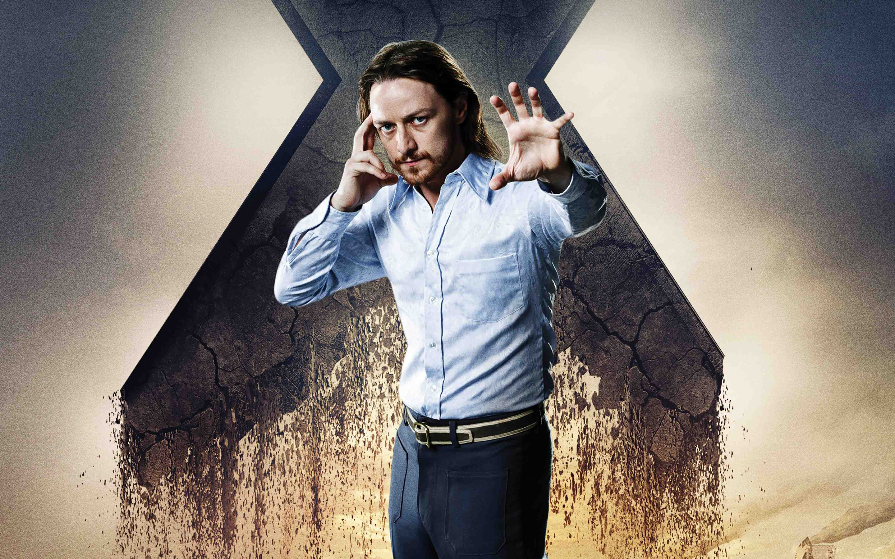

Professor Charles Xavier
Charles Francis Xavier was the mutant son of wealthy nuclear researcher, Dr. Brian Xavier, and his wife, Sharon Xavier-Marko.[22] While gestating in his mother's womb, Charles' twin was recognized by Charles as an evil presence and he preemptively tried to kill it with his nascent psychic abilities, causing the fetus' miscarriage.[23] After Dr. Xavier's death in an accident, Sharon married his colleague Dr. Kurt Marko who brought his son by a previous marriage, Cain Marko to live in their ancestral mansion. Dr. Marko favored the gentle, smart Charles over his own son, which led to Cain constantly bullying Charles and Dr. Marko secretly beating Cain. Sharon married Dr. Marko because she believed that it would be best for Charles
Charles' telepathic powers began emerging when he was still a boy, around ten, and, as he grew older, he learned to control them. Due to the immense psychic energies emanating from Charles' head, he became bald at a young age. With his powers, Charles discovered that Dr. Marko married to his mother for her money, admitting that he was jealous of Dr. Xavier's wealth. Realizing Dr. Marko did not have feelings for Sharon, she started drinking, becoming an alcoholic. Marko started to abuse both Sharon and Cain, and Charles linked his mind to both of them. He telepathically linked to his mother's in an effort to share the abuse with her and alleviate it.
On another occasion, he found himself experiencing the anguished thoughts and emotions of Cain, after Cain had been beaten by his father. Feeling Cain's pain aggravated Cain's dislike to Charles, but the inexperienced young Charles could not control or end his contact with Cain's mind at this time. Sharon died shortly thereafter of a broken heart, leaving Charles to live with his step-father and abusive step-brother.
Meeting Moira
Xavier was approached by Moira Kinross during a fair in Oxford, asking him why he was smiling. He simply responded that recently, he had the "most wonderful dream", referring to his ideals of the peaceful coexistence between humans and mutants. Charles questioned Moira whether they have ever met before, which Moira responded to by asking him to read her mind, showing him all the lives she had already lived, a consequence of her mutant powers. Professor X was completely crushed by the experience, left thunderstruck by the revelation that no matter what would have happen, mutantkind would always lose. In her tenth and tentatively last life-cycle, all she ever wanted was for Professor X and Magneto to work together, avoiding mutants always losing as she saw in her past timelines.
Powers and Abilities
Xavier is able to read minds and project his own thoughts into the
minds of others within a radius of 250 miles (on Earth). With
extreme effort he can greatly extend that radius. When synched with
Cerebro or Cerebra, he can connect to every mind on a planet. After
he was thrown into the M'kraan Crystal, it not only restored his
mutation, but made his telepathy more powerful than it had been
previously, thereby making him the world's most powerful telepath
once again.
Genius Intelligence: A natural genius, Xavier is a
leading authority on genetics, mutation, and psionics. He possesses
considerable expertise in other life sciences. He is highly talented
in devising equipment for utilizing and enhancing psionic powers.
Xavier is also quite the masterful tactician and strategist,
effectively evaluating situations and devising swift responses; he
has, on numerous occasions, even fashioned long-term operations as
complex as those of adversaries such as Sinister, Magneto, and
Apocalypse
X-Men
Professor Xavier later met with Fred Duncan, an FBI agent investigating the growing number of mutants. Professor Xavier told Duncan of his plan to locate young mutants and enroll them in his "School for Gifted Youngsters", using his ancestral mansion home as a base to train them to use their powers, as well as provide them conventional educations, for humanity's benefit. The base included subterranean medical labs, a training facility called the "Danger Room", an aircraft hanger with a Stratojet, and Professor Xavier's mutant detection device, code-named "Cerebro". Amelia stayed with Professor Xavier, partially because she loved him, but also to convince him to give up his nonsense idea. On the anniversary of his liberation from the Vernichtungslager Extermination Camp, Professor Xavier and Amelia met with Erik, now calling himself Magneto and wearing a costume and helmet designed to shield from telepathy, in Auschwitz, Poland. Professor Xavier pleaded with Magneto that the actions he would set into motion were no different than what the Nazis did to him years earlier. After both men reminded each other that they had the power to destroy one another, Magneto left, with Professor Xavier hoping that he saw the error of his ways.